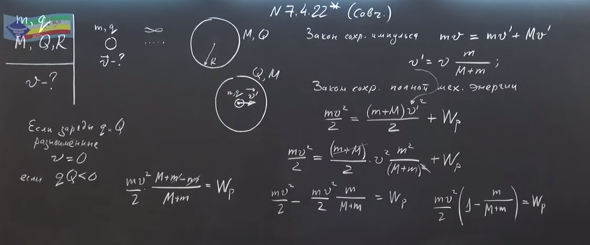
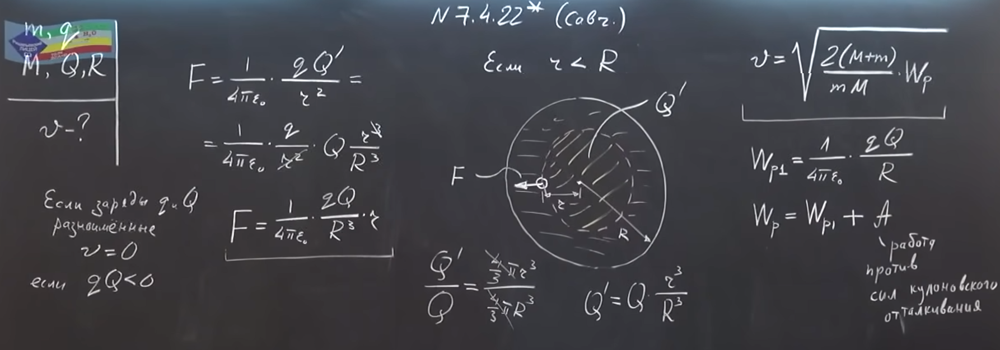
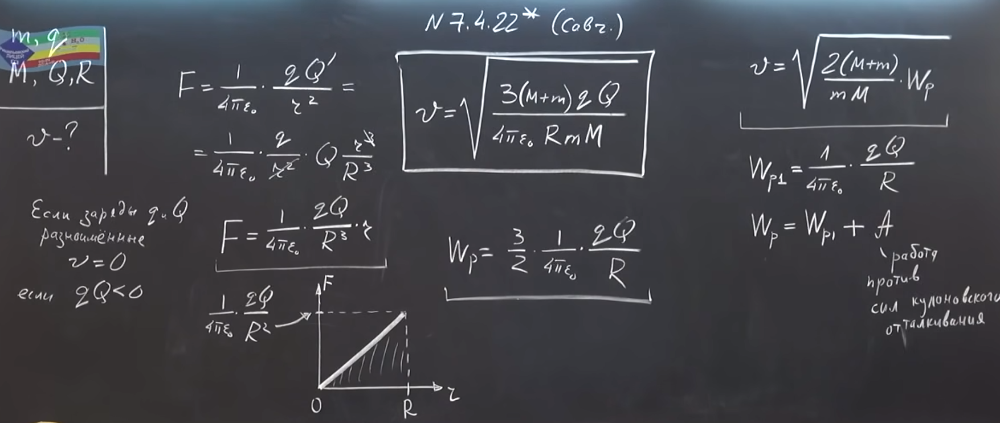

Условие:
\(7.4.22^{∗}.\) Частица массы \(m\), имеющая заряд \(q\), приближается с большого расстояния к равномерно заряженному незакрепленному шару, двигаясь по направлению к центру шара. Радиус шара \(R\), заряд \(Q\), масса \(M\). Вначале шар покоится. Какую наименьшую скорость должна иметь частица на большом расстоянии от шара, чтобы пройти через его центр?
Решение:


